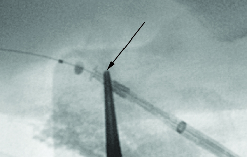

Arterial Implant Procedure
Arterial InterGraft implant procedure
- Arterial Delivery Preparation
- Identify arteriotomy site and mark with surgical clamp.
- Attach vessel loops or vascular clamps for proximal and distal control of artery. Do not tighten at this stage.
- Gain access to artery using a micropuncture kit, insert wire, remove needle and insert 4F sheath.
- Exchange 4F sheath for 7F sheath - replace micropuncture wire with 0.0014" wire.
- Load AIG delivery system over the 0.014" wire.
-
Under fluoroscopic guidance, advance AIG over the wire and into the artery
approximately 1 - 2 cm past arteriotomy.
Arrow points to clamp tip at arteriotomy site.
 - Remove red deployment lock labeled D and position AIG marker band approximately 2 cm central to clamp tip that marks the arteriotomy site.
-
Loosen T-B valve B.

- Reconfirm marker band position, remove 7F sheath and deploy AIG under floroscopy using standard "pin and pull" technique until only the tines emerge from the delivery sheath.
-
Inflate positioning baloon, pull the inflated baloon back to engage tines,
tighten T-B valve B.
- Slowly pull entire AIG system up vertically from artery until resistance is felt.
Resistance indicates apposition of the tines at the artery wall. - Complete deployment of the AIG using "pin and pull" technique, deflate balloon and remove entire system and guidewire.
-
Grasp protruding end of AIG to control bleeding, stabilize base of AIG by
grasping.
- Insert AIG into graft.
- Remove clamp and verify flow through circuit.
- Release vessel loops or vascular clamps, close incisions.